Livestock Manager Premium es una aplicación para la gestión integral de explotaciones
ganaderas: trazabilidad de animales, control sanitario y reproductivo, producción de carne y leche,
comercialización, contabilidad de gastos, informes y documentación oficial. Todos los datos se guardan
en el propio dispositivo (funciona sin conexión a internet).
Este manual está organizado en el orden lógico en que conviene usar la aplicación: primero
la configuración de la explotación, después el alta del ganado, la gestión diaria, la comercialización y,
por último, el análisis y la documentación. Sigue las secciones en orden la primera vez.
La primera vez que abres la aplicación (o cuando no hay ninguna explotación activa) aparece
la pantalla de bienvenida con cuatro opciones para empezar.
Importar Backup — si ya tienes una copia de seguridad (archivo .json) de otra
instalación, selecciónala para restaurar todos tus datos.
Nueva Finca — crea tu explotación desde cero rellenando la ficha de finca. Es la opción
habitual la primera vez.
Cargar Demo CHAMORRO — carga una explotación de ejemplo con datos en todos los módulos.
Útil para practicar y conocer la app sin riesgo.
Seleccionar Finca — si ya tienes varias explotaciones creadas, cambia entre ellas.
Recomendación: si es tu primera vez, pulsa Cargar Demo CHAMORRO para explorar
la aplicación con datos reales antes de crear tu propia finca.
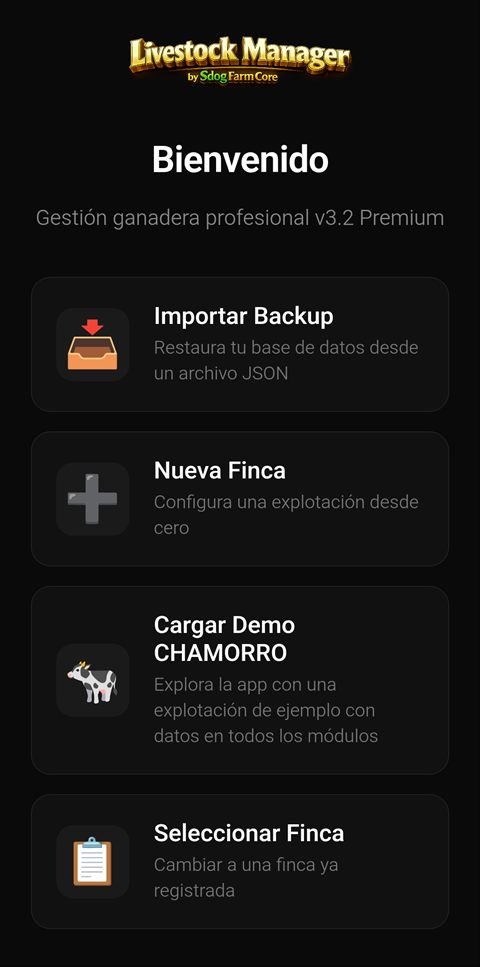
Pantalla de bienvenida con las opciones de inicio.Visión general
2. Panel principal (Dashboard)
Es la pantalla de inicio (Inicio en la barra inferior). Ofrece una
visión rápida del estado de la explotación.
El Resumen Ganadero muestra el número total de zonas, rebaños y animales.
Los KPIs Diarios calculan indicadores clave (litros/oveja/día, eficiencia de pienso,
% bajas por mamitis) en cuanto hay datos recientes registrados.
Más abajo encontrarás las alertas (sanitarias, de trazabilidad, administrativas y de
calendario) que la app genera automáticamente.
El nombre de la finca activa aparece arriba a la derecha; púlsalo para ir directamente a Ajustes.
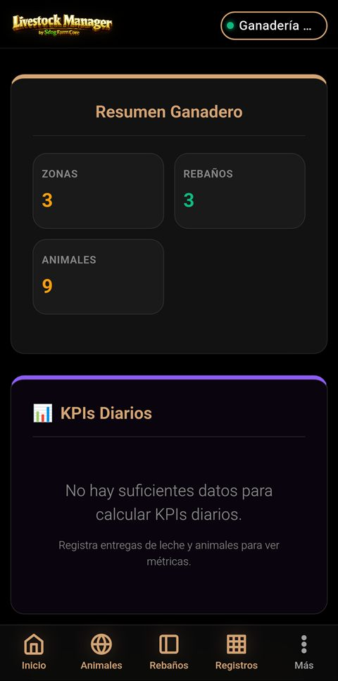
Resumen ganadero y KPIs diarios en el panel principal.Configuración
3. Ajustes y ficha de finca
Antes de registrar ganado conviene completar los datos de la explotación. Accede desde
Más → Ajustes (o pulsando el nombre de la finca).
Revisa y completa la ficha de la finca: nombre, propietario, dirección, NIF/CIF, código
REGA y CEA.
Configura la comunidad autónoma, el tipo de explotación (carne / leche / mixto / ibérico)
y el sistema (intensivo / extensivo / semiextensivo). Esto adapta umbrales y normativa.
Rellena los datos de la ADSG (código, veterinario, colegiado, NIF) si procede.
Si produces leche, completa el paquete lácteo: contrato obligatorio e INFOLAC.
Usa la tarjeta de copia de seguridad para exportar/importar tus datos periódicamente.
Realiza copias de seguridad con regularidad. Los datos viven en el dispositivo; si lo pierdes
o reinstalas sin backup, no se podrán recuperar.
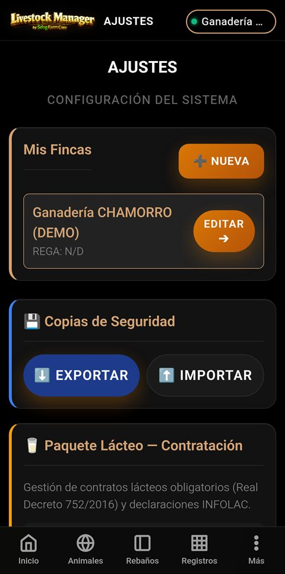
Pantalla de Ajustes con la configuración de la explotación.Configuración
4. Zonas / Parcelas
Las zonas son las parcelas físicas donde se ubican los rebaños. Defínelas antes de crear
los rebaños. Accede desde Más → Zonas.
Pulsa ➕ Nueva Zona.
Introduce el nombre de la parcela (p. ej. «Parcela Norte 42ha»).
Indica la superficie (ha) y el aforo máximo de animales.
Selecciona el uso principal (pasto, barbecho, cultivo, estabulación, cuarentena) y una
descripción opcional.
Guarda. La tarjeta de cada zona muestra su ocupación (animales / aforo) y los rebaños
presentes. Pulsa una zona para ver su ficha y editarla.
La app valida el aforo: no permite trasladar animales a una zona que superaría su capacidad
máxima.
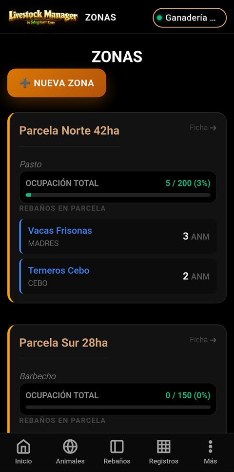
Listado de zonas con ocupación y rebaños por parcela.Configuración
5. Rebaños
Un rebaño agrupa animales de la misma especie y finalidad dentro de una zona. Accede desde
Rebaños en la barra inferior.
Pulsa ➕ para crear un rebaño nuevo.
Asigna un nombre, la especie (vacas, ovejas, cabras, cerdos…) y el
tipo (madres, cebo, recría…).
Selecciona la zona en la que se encuentra y la capacidad del rebaño.
Guarda. Desde la ficha del rebaño podrás ver sus animales, registrar tratamientos y
realizar traslados.
Al crear un rebaño, la app te ofrece poblarlo inmediatamente con animales o con una carga masiva
de crotales.
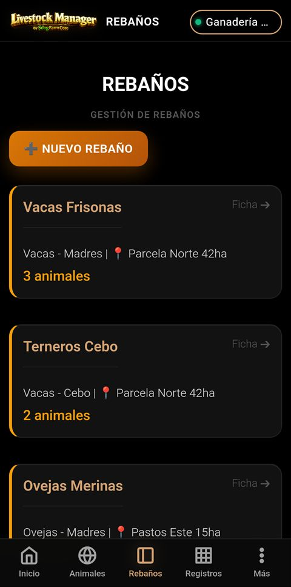
Listado de rebaños de la explotación.Alta de ganado
6. Animales
El registro individual de cada animal es el núcleo de la trazabilidad. Accede desde
Animales en la barra inferior.
Pulsa ➕ NUEVO para dar de alta un animal.
Introduce el crotal (número de identificación oficial). Puedes usar el
escáner de códigos para leerlo. El campo se valida en color: dorado si empieza por «ES».
Selecciona especie, sexo, raza y el rebaño de destino (la lista se filtra
por especie).
Indica la fecha de nacimiento, el tipo de alta (nacimiento / compra) y el peso inicial.
Guarda. Desde la ficha del animal podrás registrar pesajes, tratamientos y consultar su
historial. Usa el buscador para localizar un animal por crotal, raza o rebaño.
Cada animal queda vinculado a su rebaño y zona. Su estado (activo / vendido / baja) se
actualiza automáticamente con las operaciones.
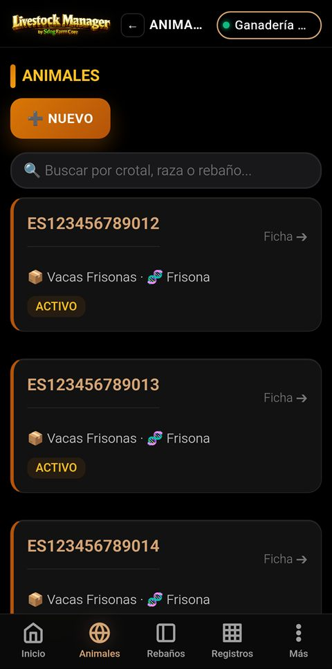
Listado de animales con crotal, rebaño y estado.Gestión diaria
7. Producción y pesajes
Registra los pesajes y la producción para controlar el crecimiento y el rendimiento.
Accede desde Registros → Producción.
Para un pesaje individual, abre la ficha del animal y pulsa ⚖ REGISTRO / PESADA.
Para pesar varios animales seguidos, usa el Gestor de Pesada Industrial: selecciona los
compañeros del mismo rebaño y ve introduciendo el peso; pulsa ENTER para pasar al siguiente.
La app calcula automáticamente la Ganancia Media Diaria (GMD) a partir del historial de
pesos.
Consulta las proyecciones de peso y los animales de bajo rendimiento desde esta sección.
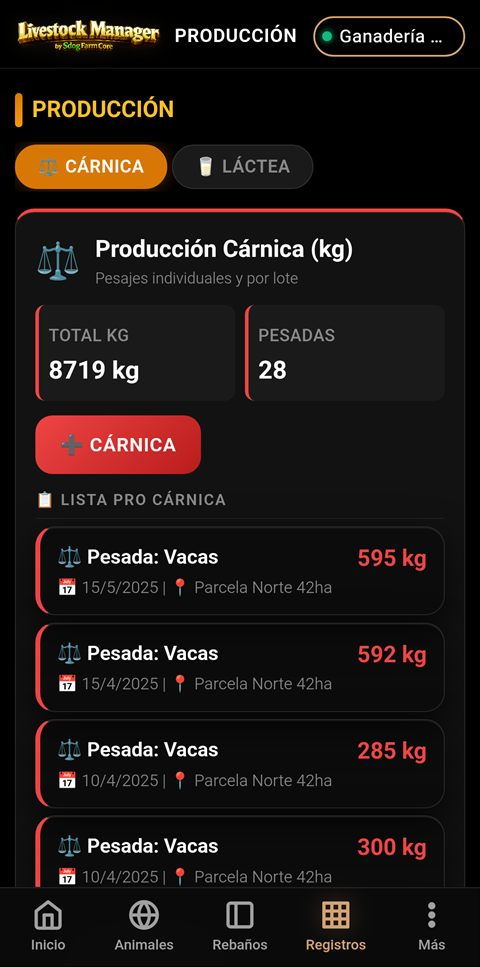
Sección de producción y registro de pesajes.Gestión diaria
8. Control lechero
Gestiona las entregas de leche, sus analíticas y la rentabilidad. Accede desde
Más → Control Lechero. La pantalla tiene cinco pestañas.
Para registrar una entrega, abre el Wizard de Albarán de Leche y completa los 6 pasos:
fecha y CCAA, datos de la cisterna (matrícula, letra Q, INFOLAC), cadena de frío, laboratorio
(grasa, proteína, somáticas, gérmenes), precio y MOFA.
La pestaña Producción muestra litros, entregas y precios medios.
La pestaña Analíticas compara los parámetros de calidad con los umbrales de referencia
(LIGAL).
La pestaña Liquidaciones desglosa el importe económico de cada entrega.
La pestaña MOFA calcula el margen sobre el coste de alimentación.
El extracto seco y el precio final se calculan
automáticamente a partir de los datos de laboratorio.
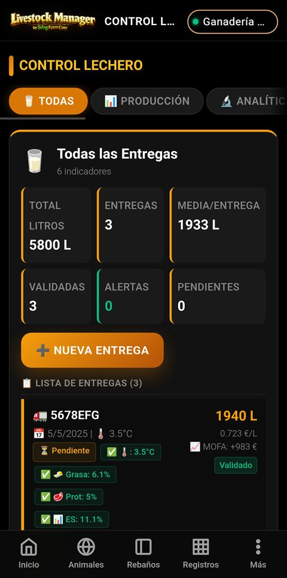
Control lechero con KPIs y pestañas de análisis.Maestros comerciales
9. Compradores
Da de alta los compradores antes de registrar ventas. Accede desde
Más → Compradores.
Pulsa ➕ Nuevo.
Introduce nombre/razón social y NIF/CIF (obligatorios y únicos).
Indica el tipo (carne / leche / híbrido), teléfono, población y condiciones de pago.
Guarda. Desde la ficha del comprador verás su historial de compras y contratos asociados.
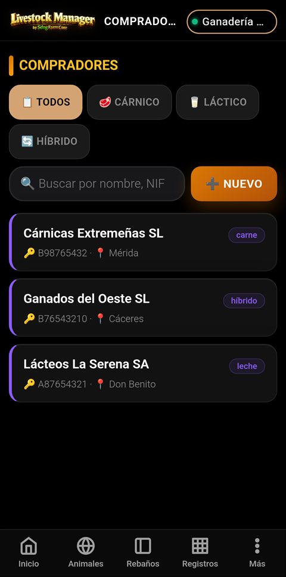
Listado de compradores registrados.Maestros comerciales
10. Proveedores
Registra los proveedores de piensos, sanidad, maquinaria, etc. para asociarlos a tus
gastos. Accede desde Más → Proveedores.
Pulsa ➕ Nuevo.
Introduce nombre, NIF/CIF, población y las categorías que suministra (piensos, farmacia,
maquinaria…).
Guarda. Al registrar un gasto podrás vincularlo a un proveedor.
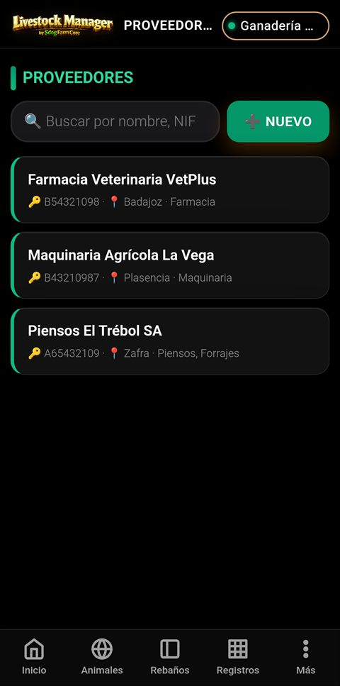
Listado de proveedores.Maestros comerciales
11. Transportistas
Registra los transportistas para las expediciones de animales y leche. Accede desde
Más → Transportistas.
Pulsa ➕ Nuevo.
Introduce nombre, NIF/CIF, matrícula y tipo de vehículo (camión ganadero, cisterna…).
Indica la capacidad y marca si dispone de certificado de bienestar animal o condiciones
termoneutrales.
Guarda. Estos datos se incorporan automáticamente a los albaranes y documentos de movimiento.
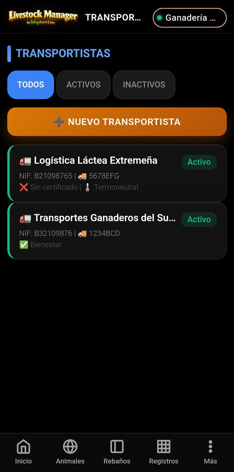
Listado de transportistas.Comercialización
12. Comercialización (ventas)
Registra las ventas de carne y leche. Accede desde
Más → Comercialización.
Selecciona la pestaña Carne o Leche según el tipo de venta.
Para una venta de carne, abre el wizard y completa: animal(es), comprador, datos del
matadero, peso vivo y peso canal, clasificación SEUROP, gastos de
transporte y matanza, IVA y retención.
La app calcula el rendimiento canal y el importe final, y bloquea la venta si el animal
está en periodo de supresión sanitaria.
Al confirmar, el animal pasa a estado vendido y se genera el albarán y el
documento DIMOE correspondiente.
Puedes descargar el albarán en PDF desde el detalle de la venta.
Regla de seguridad alimentaria: no se puede comercializar un animal bajo tratamiento con
periodo de retiro activo. Regla de mermas: el peso canal siempre debe ser menor que el peso vivo.
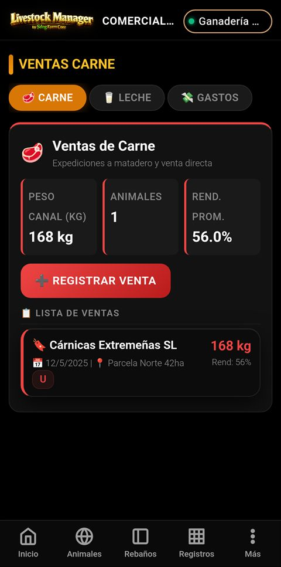
Sección de comercialización de carne y leche.Costes
13. Gastos
Lleva el control de los costes operativos de la explotación. Accede desde
Registros → Gastos.
Pulsa ➕ para añadir un gasto.
Introduce concepto, fecha, importe y
categoría (alimentación, sanidad, combustible, mantenimiento…).
Opcionalmente, vincula el gasto a un rebaño o proveedor para análisis más
detallados.
Guarda. Usa las pestañas y filtros para ver el gasto por periodo, categoría y el promedio por animal.
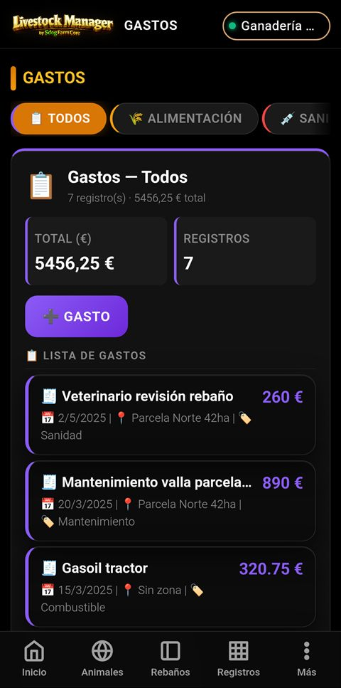
Registro y análisis de gastos.Análisis
14. Informes
El centro de inteligencia analítica reúne la rentabilidad y los registros oficiales.
Accede desde Más → Informes.
Cambia entre las pestañas General, Cárnico y Lácteo
para ver los indicadores de cada ámbito.
Consulta el balance, la rentabilidad, el censo y el desglose de ingresos
(carne / leche) y gastos.
Genera documentos oficiales: Libro Sanitario, Registro de Movimientos y
Censo.
Exporta con los botones COMPLETO / GENERAL a PDF, o a
Excel. Al exportar se abre el menú para compartir o guardar el archivo.
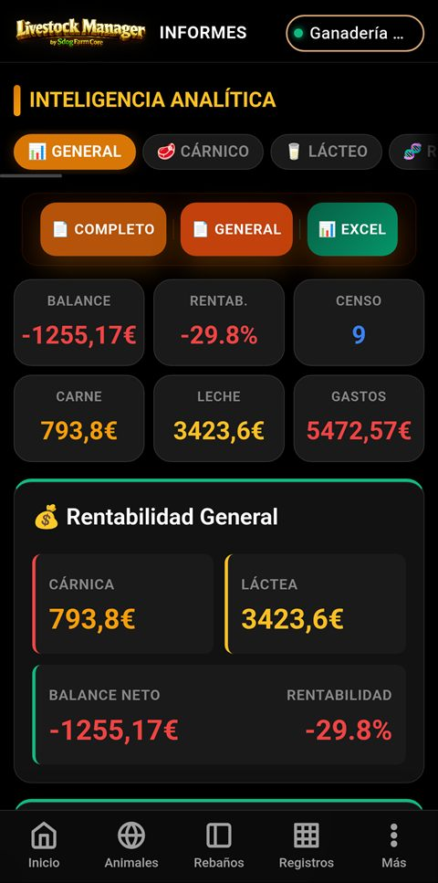
Inteligencia analítica con balance, rentabilidad y exportación.Análisis
15. Trazabilidad 360°
Ofrece la visión completa del recorrido de los animales y el cumplimiento normativo.
Accede desde Más → Trazabilidad.
Consulta el histórico de altas (nacimientos / compras) y bajas
(ventas / matadero).
Revisa los periodos de supresión activos y las alertas de identificación o notificación
REGA pendientes.
Verifica el cumplimiento de las reglas de aforo y de seguridad alimentaria.
Panel de trazabilidad y cumplimiento.Documentación
16. Documentos legales
Centraliza la documentación oficial generada por la app (DIMOE, facturas, certificados,
DIB). Accede desde Más → Documentos.
Usa las pestañas para filtrar por tipo de documento: DIMOE, Factura,
Certificado, DIB.
Cada documento de movimiento (DIMOE) se genera automáticamente al registrar una venta y queda enlazado a
la operación.
Abre un documento para consultarlo y, si lo necesitas, exportarlo en PDF para compartir
o imprimir.
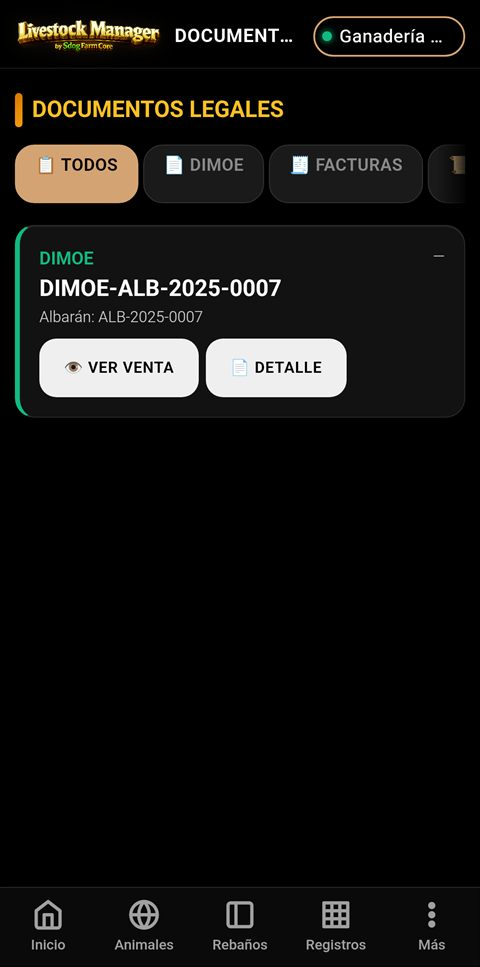
Gestión de documentos legales por tipo.Documentación
17. Cuaderno digital
Reúne en un único documento toda la actividad de la explotación, listo para exportar.
Accede desde Más → Cuaderno Digital.
Revisa el contenido del cuaderno, que recopila los registros de la explotación.
Pulsa 📄 Exportar PDF Completo para generar el documento completo.
Pulsa 🖨 Imprimir para generar el PDF y enviarlo a una impresora.
En ambos casos se abre el menú del sistema para compartir, guardar o imprimir el archivo.
Exporta el cuaderno periódicamente como respaldo documental de la actividad de tu explotación.
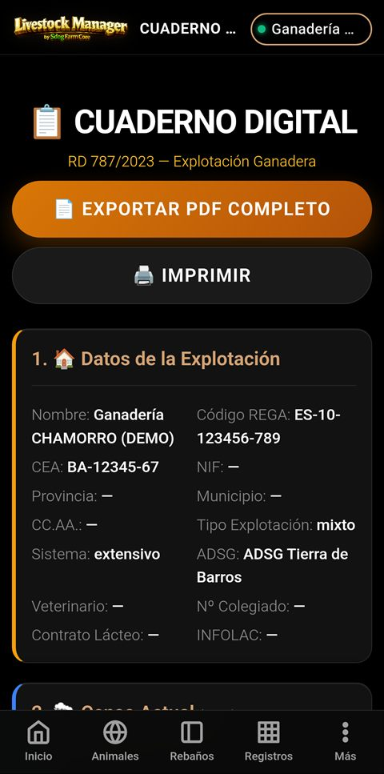
Cuaderno digital con opciones de exportación.Ejemplos
📘 Ejemplos prácticos paso a paso
Estos manuales te guían en la creación completa de una explotación desde cero,
con datos de ejemplo y capturas de pantalla. Sigue cada paso para familiarizarte
con el flujo completo de trabajo.